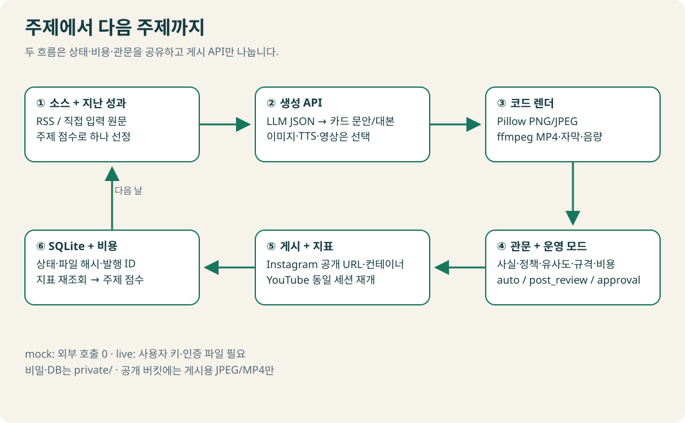
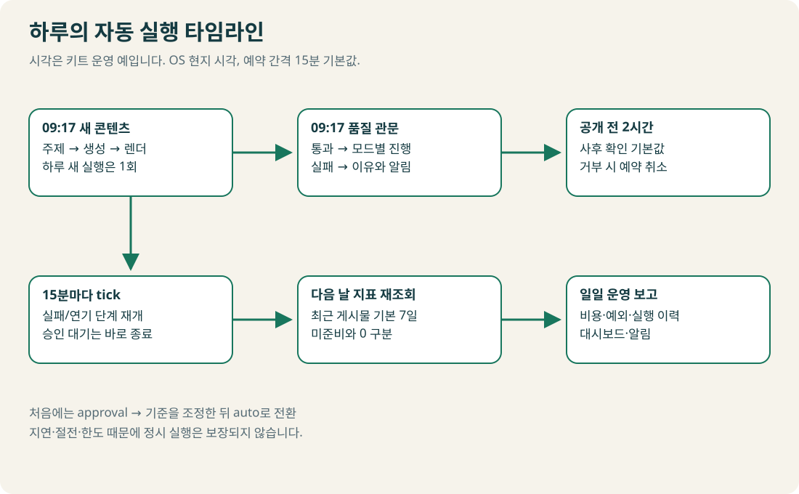
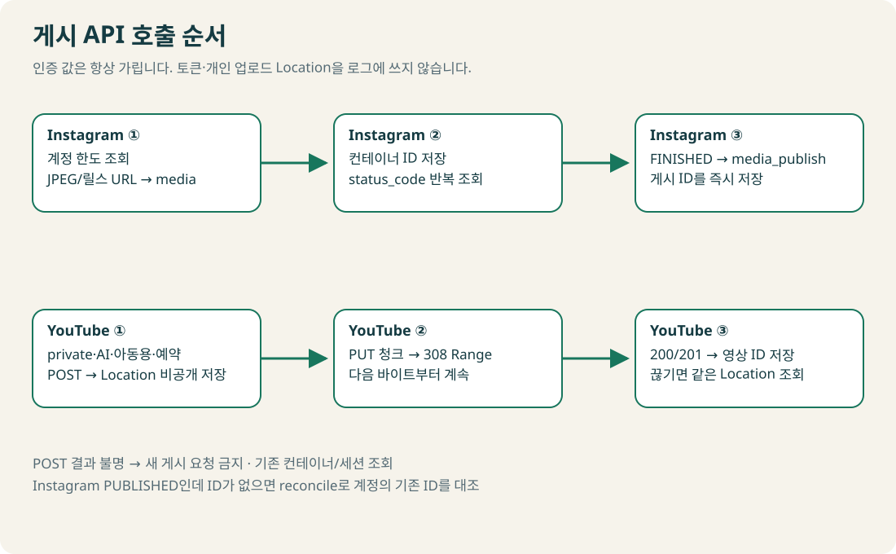
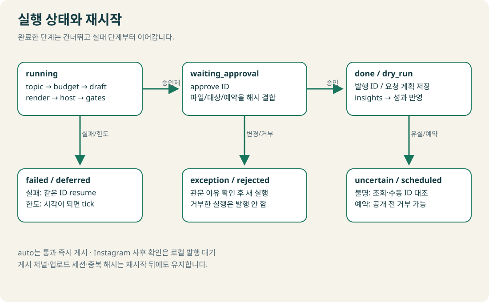
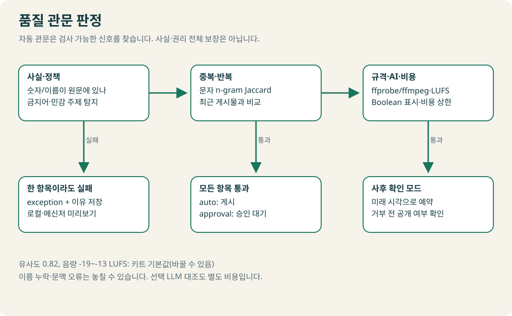
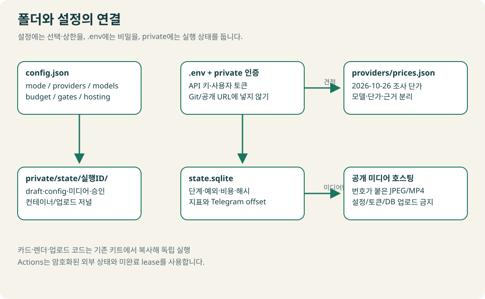
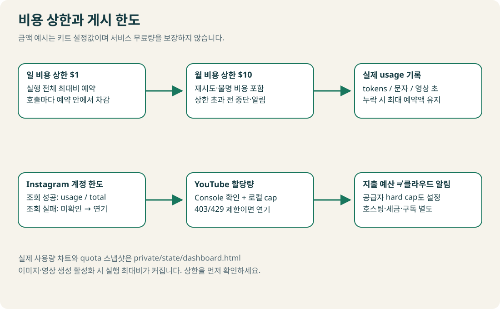
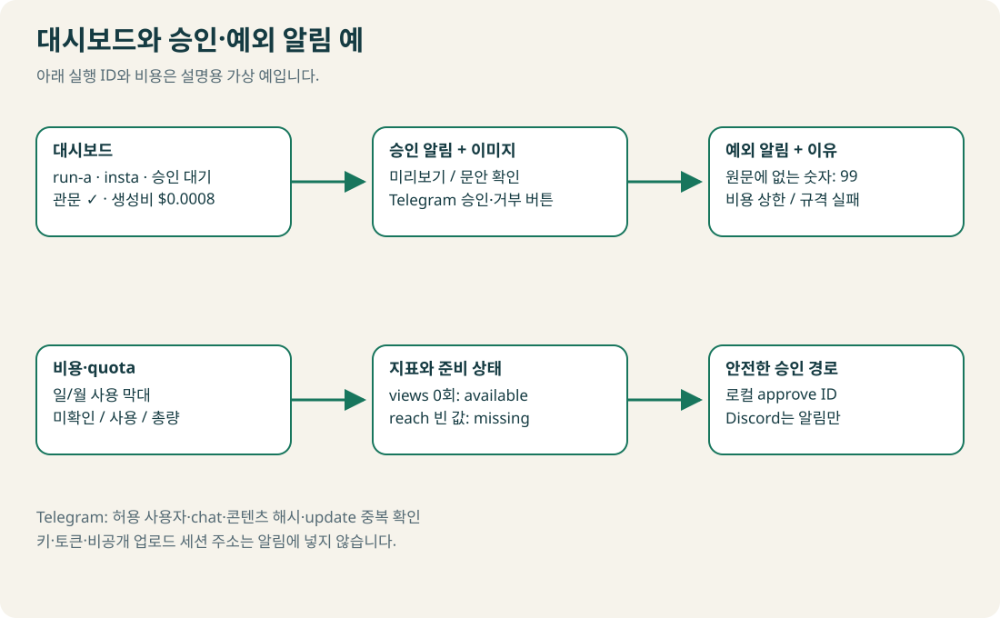

자동화 흐름을 그림으로 보기
설치·실행 안내로 돌아가기 · 실제 mock 대시보드 보기

두 흐름이 상태·비용·승인 규칙을 함께 사용해요. 다크 원본

예약 시각·간격은 키트 기본값이며 실제 OS 시각을 확인해요.

발행 결과가 불명이면 새 요청으로 해결하지 않아요.

resume은 같은 실행 ID에서 이어가요.

관문 실패를 승인 명령으로 우회할 수 없어요.

공개 폴더에는 게시용 JPEG/MP4만 올려요.

사용 금액 막대와 quota 게이지는 실행 대시보드에서 실제 저장값으로 그려요.

그림의 숫자·ID는 가상 예예요.